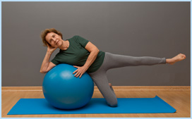
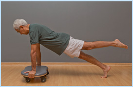

Chegar à Melhor Idade com saúde e uma excelente qualidade de vida vêm sendo o objetivo de muitos. Mas, se você já está na Melhor Idade, o momento de manter o equilíbrio entre o corpo e a mente e/ou prevenir dores indesejadas é agora!
O Pilates é um exercício muito eficaz para amenizar e até mesmo reverter os efeitos do tempo sobre o corpo. Como o método dispõe de uma série de exercícios de baixo impacto.

Não há pressão sobre as articulações enquanto os movimentos são executados,
tornando-o ideal para os praticantes da terceira idade.
A prática do método estimula a produção e a demanda de cálcio para os ossos que possam estar
Por isso, os portadores de enfermidades como artrose, artrite reumatóide, artroplastia e discopatias degenerativas (degeneração das vértebras e discos da coluna), osteopenia e osteoporose também podem obter melhorias com esta rotina de atividades.
Contudo, o maior ganho da prática talvez seja a melhora que ela proporciona à auto-estima.
O Pilates incentiva a vontade de aprender e viver, proporcionando melhor qualidade de vida!